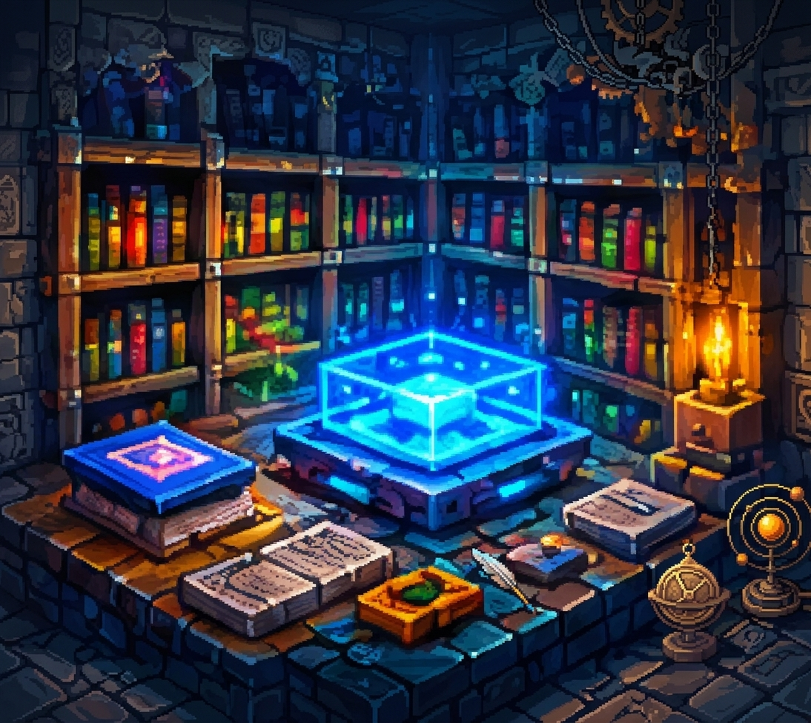
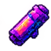

🎬
Только для Media
ReplayMod, IsometricRender, CmdCam, WorldDownloader и Flashback разрешены только для проектов Media и игрокам с соответствующим статусом.

Национальные духи, дипломатия, армии и экономика — всё, что определяет жизнь государств Cube Nation.
Особенности и бонусы стран.

Государства, города, столицы и условия роспуска.
Колонизация, экономика, флот, авиация и лимиты.
Порядок боёв, десант и военные кампании.
Список запрещённого клиента и правила проверки.
Общение, безопасность и ответственность игроков.
Запрещённые моды и ПО: XRay, AutoMining, ReplantingCrops, AutoHarvest, Reap, Tweakeroo, AutoFish, Accurate Block Placement, Baritone, FreeCam, WorldEdit, Better PVP, MobHealthBar (показывает инвизников), Don't hit teammates, CleanCut, AutoAttack, AutoAim, AutoLeave, Foodslot, Quickstack, ItemSwap, AutoTool. Все миникарты, кроме Xaero, запрещены. Любые самописные моды до прохождения проверки считаются запрещёнными.
Визуальные моды (Visuals): любые моды или ресурспаки, изменяющие визуальное отображение, обязаны пройти проверку администрацией. Использование без проверки приравнивается к использованию запрещённых модов.
Моды для Media: ReplayMod, IsometricRender, CmdCam, WorldDownloader, Flashback разрешены только игрокам со статусом Media. Использование или хранение без этого статуса считается нарушением.
Права на проверку: проверять и одобрять самописные и визуальные моды вправе только RP Administrator, Moderator, Tech Administrator и High Administrator.
Важно: жители всех версий запрещены.
Право на проверку: Администрация вправе в любой момент потребовать проверку клиента/компа (Screenshare) у подозрительного игрока. Отказ от проверки, выход во время проверки или умышленное затягивание приравнивается к признанию нарушения и карается баном.
Разрешённые программы: Администрация может потребовать использовать AnyDesk, Echo, Nyx, Axiom и др. инструменты. Игрок ОБЯЗАН скачать AnyDesk и все требуемые программы; отказ считается отказом от проверки.
Область проверки: Включает папку .minecraft (mods, versions, resourcepacks, shaderpacks), системные временные папки, загрузки, корзину, историю файлов, процессы и автозагрузку.
Результат проверки: Обнаружение запрещённых модов или следов читов карается по правилу 3.6.
Примечание: Моды, не указанные в правилах, не считаются автоматически разрешёнными. Перед использованием проконсультируйтесь с администраторами из п. 3.5.
Хранение запрещённого файла тоже считается нарушением. Визуалы и самописные моды допускаются только после проверки.
XRay, AutoMining, ReplantingCrops, AutoHarvest, Reap, Tweakeroo, AutoFish, Accurate Block Placement, Baritone, FreeCam, WorldEdit, Better PVP, MobHealthBar (показывает невидимых игроков), Don't hit teammates, CleanCut, AutoAttack, AutoAim, AutoLeave, Foodslot, Quickstack, ItemSwap, AutoTool, а также миникарты кроме Xaero.
Также запрещены любые непроверенные самописные моды, визуальные моды и ресурспаки с преимуществами.
ReplayMod, IsometricRender, CmdCam, WorldDownloader и Flashback разрешены только для проектов Media и игрокам с соответствующим статусом.
Хранение XRay и других запрещённых модов — бан на 29 дней. Использование запрещённых или непроверенных самописных/визуальных модов — бан на 30 дней, иногда по IP. Media-моды без статуса наказываются как запрещённые.
Заморской колонии нужны колониальная администрация, порт и транспортный корабль. RP-пост запускает двухдневный процесс. Метрополия должна иметь стабильность 50%+. При захвате администрации колония переходит захватчику. Без контроля метрополии 3 дня колония может объявить независимость.
Государство: 2 игрока и столица. Город: 1 игрок и городская администрация. Новый город соедините железной дорогой со столицей. Правительство постройте за 7 реальных дней после регистрации.
Без нефти нельзя применять в войне танки, авиацию, тяжёлый флот и подлодки. Нужны месторождение и НПЗ (технологии 15). Одно месторождение покрывает до 2 стран: своё государство и одного союзника по RP-договору максимум на 3 RP-года.
ЛД ограничивает число бойцов одновременно в сражении. ОВ ограничивают возвращение в бой после смерти. ЛД/ОВ дают военные здания и призывы. Гражданский: +1 ЛД, +1 ОВ за RP-год; частичный: +3 ЛД, +2 ОВ; военный: +5 ЛД, +4 ОВ и −10% стабильности; всеобщий: +10 ЛД, +7 ОВ и −25% стабильности.
Последовательность исследований: транспортный корабль → малое судно → среднее судно → тяжёлое судно → сверхтяжёлое судно. Флот перемещается раз в день, может находиться вне порта до 3 дней. Регионы 43–50 доступны только подлодкам.
Авиация действует в радиусе 1000 блоков только при активном бою: поддержка, удар по полю, разведка и ПВО. Не атакует тыл или столицу, не захватывает территории. Требует нефть. Сбитый пилот тратит 1 ОВ и покидает бой.
Бонусы: +2 ЛД при обороне своей территории; +1 ОВ при призыве.
Бонусы: +1 ЛД при обороне своей территории; +5% стабильности.
Бонусы: +1 ЛД при обороне своей территории.
Бонусы: нет.
Бонусы: +2 ЛД при призыве; +1 ОВ при призыве; +5% стабильности.
Бонусы:
+2 ЛД при призыве; +1 ОВ за RP-год; +1 технология от университета.
Бонусы: +2 ЛД при обороне; +1 ОВ при призыве; против Малороссии +2 ОВ и +1 ЛД.
Бонусы: +1 технология от университета и исследовательского центра; +5% стабильности.
Бонусы: +2 ЛД при обороне; +1 ОВ при призыве; +1 технология от университета.
Бонусы: +1 колония сверх лимита; +2 ЛД при обороне колоний; порт и верфь +1 слот; +5% стабильности.
Бонусы: +3 ЛД, +2 ОВ за RP-год при призыве; +1 технология от университета; 3 казармы на город.
Бонусы: +2 технологии от университета, +1 от исследовательского центра; +2 ЛД на море.
Бонусы: +5% стабильности; +1 технология от университета.
Бонусы: +1 колония сверх лимита; порт и верфь +1 слот; +5% стабильности.
Бонусы: +10% стабильности; +1 технология от исследовательского центра.
Бонусы: +3 ЛД и +2 ОВ при обороне; командный центр +1 ЛД.
Бонусы: +3 ЛД, +1 ОВ при призыве; +5% стабильности.
Бонусы: +2 ЛД, +1 ОВ при призыве; +1 технология от университета.
Бонусы: +1 ЛД при призыве добровольцев; +3% стабильности.
Бонусы: +2 ЛД при обороне; +1 ОВ при призыве; казарма +1 ЛД.
Бонусы: +5% стабильности; порт +1 слот.
Бонусы: +2 ЛД на Средиземном море; +1 ОВ при призыве; порт +1 слот.
Бонусы: +5% стабильности; +1 ЛД при обороне проливов; +1 ОВ при призыве.
Бонусы: +4 ЛД, +2 ОВ при призыве; +2 ЛД при обороне.
Бонусы: +5% стабильности; +1 технология от университета; порт и верфь +1 слот.
Ничего не найдено. Попробуй другое название или страну.